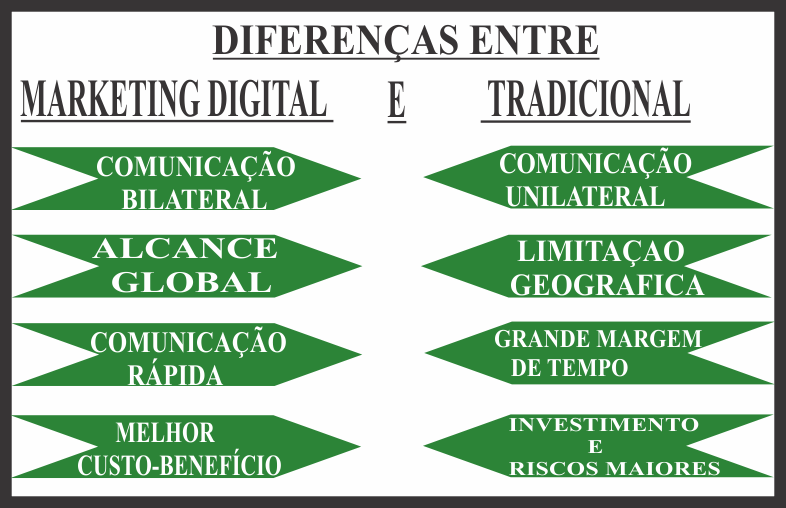

Marketing Digital
O marketing digital é um conjunto de atividades que empresas fazem na web com o intuito de atrair novos negócios, criar um relacionamento com o publico nas redes sociais, fazer com que a marca tenha uma identidade no mundo virtual.
Resumidamente é promover produtos em redes sociais. Apesar de ser usado principalmente por grandes empresas, está disponível para todo tipo de empresa, já que não é preciso grandes investimentos para conseguir bons retornos.
Possui muitas vantagens em relação ao convencional e acabou se tornando algo muito útil para empresas de todo o mercado seja B2B (empresa que vendem para empresas) ou B2C (empresas que vendem para consumidores).
O termo surgiu nos primórdios da internet, mas era muito parecido com o marketing tradicional já que a comunicação era unilateral, ou seja, possuía interação passiva com o público que acessava essas páginas da web. Somente nos anos 2000 que ele se transformou no que conhecemos hoje, quando as pessoas ganharam maior interação com o conteúdo.
As vantagens em se utilizar o marketing digital são muitas entre elas podemos citar:
Comunicação
Tradicionalmente era usado outdoor, tv e o rádio, não permitindo uma fácil comunicação do consumidor com a empresa contratada. Por outro lado, podemos facilmente interagir com elas 24 horas por dia e até mesmo em tempo real. Deste modo a resolução de problemas se tornam muito mais fácil, trazendo mais confiança entre o para o usuário.
Alcance mundial
Algo muito importante para o marketing é a “praça”, ou seja, onde você vai colocar o anuncio do seu produto, portanto tem que se escolher o local adequado para fazer sua propaganda, isso influencia o custo e benefícios para sua empresa.
Porem hoje em dia as empresas conseguem atingir todo o mundo com sua propaganda, não há limite de distância, consegue-se facilmente impactar qualquer público ao redor do mundo bastando apenas estar conectado à internet.
Dados
As empresas de hoje conseguem dados de seus consumidores, o que ajuda a entender melhor quem está comprando. Assim fazendo propagandas mais eficientes para atingir o público alvo, tendo em mente dados como idade, sexo, etc. Evitando que uma campanha seja criada com base em suposições sem dados concretos, dessa maneira reduz-se o desperdício de dinheiro em campanhas erradas.
Além dessas características existe os chamados 8 P´s que são elementos que influenciam na percepção do comprador e determinam o sucesso de um produto. Os 8P´s são:
Pesquisas
Trata-se de você analisar seu público alvo, e descobrir melhores pontos de divulgação, o que vai gerar mais lucros para a empresa, e saber o que mais atrai este público em questão.

Planejamento
Uma estratégia de marketing pode ter diversas maneiras e ações, para não se perder nesse monte de ideias é essencial elaborar um plano, afim de que você pode medir gastos e otimizar a promoção de sua marca.
Produçao
Independentemente de onde for colocar sua propaganda é necessário que tenha conteúdo que seja e relevante para seu público alvo, não importando o formato que estão estes irão aumentar sua visibilidade e entregar o valor para seus consumidores.
Publicação
Com conteúdo em mãos você deve divulga-los nas plataformas certas, como exemplo deve-se divulgar um vídeo no Youtube ou outros semelhantes. Isso garantira que seu conteúdo seja encontrado facilmente por qualquer pessoa no mundo.
Promoção
Após a publicação desses conteúdos, algo importante a se fazer é promover ele na plataforma escolhida, para abranger o maior número de pessoas possíveis, levando em conta suas pesquisas anteriores para poder observar se não está perdendo tempo ali.
Propagação
A interação entre comprador e vendedor nesse marketing é imensa, assim sendo capaz de criar uma relação com seu público criando conteúdos que os estimulem a comentar e compartilhar sua marca tonando um mecanismo de promoção para ela.
Personalização
No mundo online você pode acompanhar o comportamento dos usuários que visitam seu site ou blog, dessa forma você é capaz de criar estratégias diferentes levando em conta cada público, criando conteúdos mais relevantes.
Precisão
Com todos esses dados você é capaz de analisar se sua marca está fazendo sucesso ou não, tendo maior precisão na hora de atingir seu publico alvo não desperdiçando recursos e tempo.